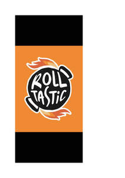

Trade Mark Journal No.2025/049 5 December 2025
UK00004271195 29 September 2025 (29,30,43)

- Class 29
- Meat, fish, poultry and game; meat extracts; preserved, dried, cooked and frozen fruits and vegetables; processed pulses; prepared meals made primarily from meat, fish, poultry, game, fruit or vegetables; meat substitutes; plant-based and vegetarian meat products; vegan food products made from legumes, nuts or soya; tofu; dairy products; milk, cream, butter, cheese and yoghurt; dairy substitutes; plant-based milk products; non-dairy yoghurt and cheese; eggs and egg products; edible oils and fats; nut-based spreads; jellies, jams, marmalade, fruit spreads and compotes; soups, broths, bouillon and stock; snack foods made from meat, fish, poultry, vegetables or fruit; prepared salads consisting primarily of vegetables, meat, poultry, fish or game; dips.
- Class 30
- Coffee, tea, cocoa and artificial coffee; coffee substitutes; iced tea; beverages made with coffee, tea, cocoa or chocolate; chocolate and chocolate products; confectionery; biscuits; cookies; cakes; pastries; tarts; doughnuts; muffins; pies; desserts made with cereals or flour; rice; rice-based snack foods; noodles; pasta; couscous; flour and preparations made from cereals; breakfast cereals; muesli; granola; bread; rolls; buns; sandwiches; pizzas; tortillas; wraps; pancakes; waffles; edible ices; ice cream; sorbets; frozen desserts; sugar; honey; treacle; syrups for food; molasses; sweet glazes and fillings; yeast; baking powder; salt; seasonings; condiments; mustard; vinegar; sauces; salad dressings; spices; marinades; flavourings, other than essential oils, for foods and beverages; ready-to-eat meals primarily consisting of rice, pasta or cereals; snack foods consisting principally of cereal or flour; snack bars containing cereal or chocolate; preserved herbs.
- Class 43
- Services for providing food and drink; restaurant services; café services; bar services; coffee shop services; snack-bar services; canteen services; catering services; take-away food and drink services; preparation and provision of take-away meals and beverages; mobile catering services; self-service restaurant services; contract food services; provision of food and drink in hotels, clubs and pubs; event catering; provision of information relating to food and drink preparation and catering services; temporary accommodation; hotel services; motel services; boarding house services; providing holiday accommodation; reservation services for temporary accommodation; rental of meeting rooms.
Rolltastic Ltd
Representative: Yasmine Lupin